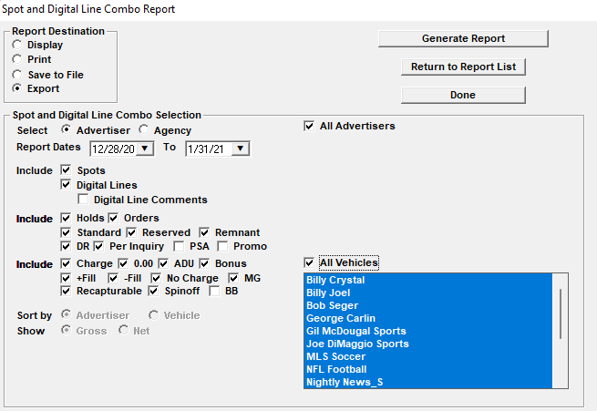
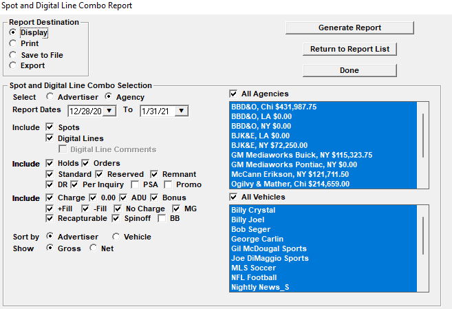

Spot and Digital Combo Report
The Spot and Digital Line Combo report is a report that includes spots and digital (podcast) lines on the same report.
Key Features
- Can be run for spots only, digital lines only, or for spots and digital lines on the same report.
- The report can be displayed, exported to PDF (for external use), or exported directly to CSV in a state that it requires no additional editing to be usable. Because it exports cleanly to CSV, it can be opened in Excel and sorted by Advertiser, or Vehicle, or any column header.
- The special CSV export version includes some columns that are not on the report version and that are primarily for internal use, such as the spot schedule status and line price type.
- The report gathers Traffic system spots from conventional vehicles, selling vehicles, and sports vehicles for the entered date range.
- Digital line information will be included when there’s at least one day for the line within the report date range.
- Digital line revenue will be calculated in a way that reflects the line cost, what has been billed so far, and how many days the line is running for in the report period.
- The report can be used to calculate stub period revenue.
- The report is part of the “Digital” report group.
Report Selection Screen
The picture below shows the report selection screen when selecting data by advertiser and when using the special “Export” option.

The picture below shows the report selection screen when selecting data by agency and when using the “Display” option.

Explanation of report options
- Report Destination
- Display: used to display the report
- Print: used to print the report to a printer
- Save to file: used to save the report directly to a file
- Export: when this option is selected, the report will create a CSV file that can be opened and used in Excel
- Select by: allows the user to choose whether to select data by advertiser or by agency.
- Advertiser: includes a contract selectivity box
- Agency: like the Spots by Advertiser report, when selecting the “by agency” option, then the contract selectivity box is not shown. (Direct advertisers are also included in this agency list box.)
- Report dates: used to select the date range the report is being run for
- For spots, the report will gather all spot records that have an air date within the entered date range, or a missed/hidden/cancelled date within the report date range (and that match the advertiser/agency/contract/vehicle selection)
- For digital lines, the report will gather information from all digital lines that have at least one day within the entered report date range (and that match the advertiser/agency/contract/vehicle selection)
- Include Spots: when checked on, spot records will be included.
- Include Digital Lines: when checked on, digital line records will be included.
- Digital Line Comments: this option is only available when the “Export” report destination is selected and when “Include Digital Lines” is checked on. When the “Digital Line Comments” checkbox is checked on, the output will include an additional column with information about how the revenue was calculated for each digital line record.
- Contract type selectivity: checkboxes for contract types
- Spot price type selectivity: checkboxes for spot line price types
- Sort by: determines how the data is sorted
- Advertiser and contract
- Vehicle and date
- Show Gross or Net: on the Display version, a set of radio buttons is available to choose whether the dollars are shown in gross or net. The special export version includes both gross and net.
- Advertiser and Agency selection box: all advertisers or individual advertisers or all agencies or individual agencies can be selected
- If the “all advertisers” checkbox is checked, then all advertisers will be included. The contract list box will be hidden when the “all advertisers” checkbox is checked
- If the “all agencies” checkbox is checked, then all agencies (and direct advertisers) will be included. The contract list box will not be shown when using the “Select by agency” option.
- If one or more but not all advertisers are selected, the contract list box will be populated with a list of contracts for the selected advertisers. Proposals are not included.
- Active and dormant advertisers and agencies are included in the list box
- Vehicle selection box: used to pick all vehicles or selective vehicles (using click and ctrl-click or shift-click).
- Included vehicle types: conventional (includes Podcast/Ad Server medium vehicles), selling, and sports vehicles
- Active and dormant vehicles are included in the list box
Displayed Report Output
This section includes an explanation of each field. Each row is either a spot record or a digital line record. There are two sort options: “by advertiser” sorts the data alphabetically by advertiser, contract number, vehicle, spot air date, spot air time, and digital line start date; and “by vehicle” sorts the data by vehicle, spot air date, spot air time, and digital line start date.
Note: depending on spot dates and digital line dates and the chosen sort option, spot records and digital line records could be intermingled (in other words, the spot records and not necessarily going to be grouped separately from the digital line records).
- Contract and line information: relevant for both spot records and digital line records
- Contract number: the Counterpoint contract number from the contract header
- External contract number: the external system order number (will be blank for spot records)
- Line type: “digital” for digital line records, “spot” for non-fill spots, “+ fill” and “- fill” for fill spots
- Contract type: the contract type from the contract header (standard, remnant, reservation, etc.)
- Agency: the agency name from the contract header. Will show “Direct” if there’s no agency and the advertiser is a direct advertiser
- Advertiser: the advertiser name from the contract header
- Product: the product name from the contract header
- Line: for spot records, the line number; for digital line records, the digital line ID number
- Vehicle: the vehicle name
- Spot fields: these fields are for spot records and will be blank for digital line records
- Spot day: the day of the week that the spot is on (a two letter abbreviation is used)
- Spot air date: the mm/dd/yy that the spot is booked on (or missed date for missed/cancelled/hidden spots)
- Spot air time: in hh:mm AM/PM
- Spot audio type: the two letter audio type code from the contract line (RC, LC, PC, RP, LP, PP)
- ISCI code: the generic ISCI code assigned to the Traffic system spot (if copy is assigned)
- Length: the length in seconds
- Digital Line fields: these fields are for digital line records and will be blank for spot records
- Digital line start date: the start date of the digital line
- Digital line end date: the end date of the digital line
- Spot/digital line gross/net
- For a spot record, the spot rate in gross or net dollars from the contract line. If it’s a fill spot, it will show $0.
- For digital line records, the report period gross or net calculated using a formula described below
- On the displayed report, either gross or net will be shown (depending on user choice). On the special CSV export version, both the gross and net will be shown.
CSV Export Version
The special CSV Export version will include additional columns to the right that are not included on the report version.
- Spot/digital line gross and net: the export version will always include both the gross and net columns
- Spot status: the status of the spot (scheduled, missed, hidden, cancelled)
- Spot price type: the spot price type from the contract line (charge, N/C, MG, ADU, Recap, Spinoff, Bonus, Package.)
- Ordered daypart/ad location: the daypart name for spot records, the ad location name for digital line records (from the contract line)
- Line type: “conventional” (not in a package) or “hidden” (in a package)
- Line comment: the line comment from the spot line or digital line
- Digital Line calculation note: optional column that shows information about how the digital line revenue was calculated
Digital Line Formula
This section describes the formula that is used to calculate the digital line revenue. The basic formula works as follows:
- For a digital line that has at least one day in the report period, determine the number of broadcast months that it’s running for
- Determine the number of days it’s running in each broadcast month that the line runs for
- For calculating the revenue for any billed months:
- Determine the invoice amount for each previously billed broadcast month. This will be zero if the line has not been invoiced yet
- For each billed broadcast month, use the number of days the line is running for in that month to calculate the daily average for that month by dividing the invoice amount by the number of days the line is running for in that month
- For each billed broadcast month, determine how many days the report period is covered by the line, and multiply that by the billed daily average for that month to get the billed report total
- For calculating the revenue for any unbilled months:
- Subtract the total amount billed so far from the total line cost to get the remaining unbilled amount
- Using the line dates, determine how many remaining unbilled line days there are
- Divide the remaining unbilled amount by the remaining unbilled line days to get the remaining unbilled daily average
- Using the report dates, determine how many days total are remaining in the unbilled report period and multiply that by the remaining unbilled daily average to get the unbilled report total
- Add the billed report total to the unbilled report total to get the complete report total for that digital line